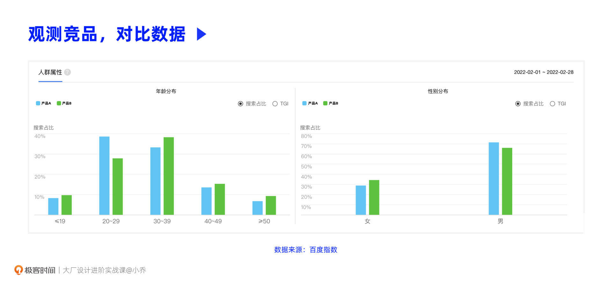
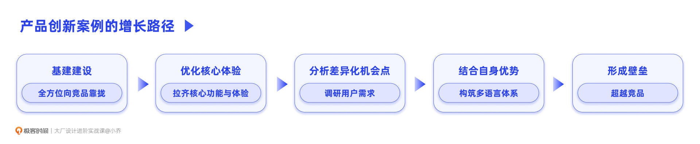
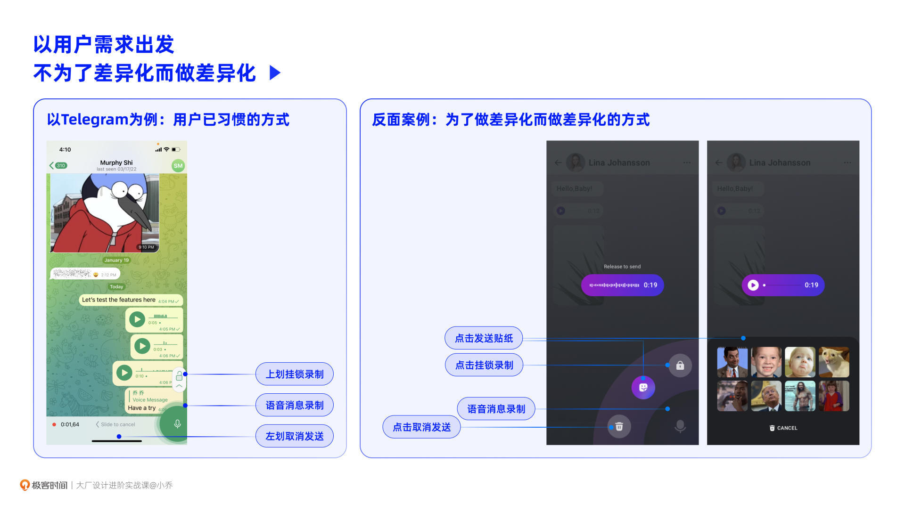
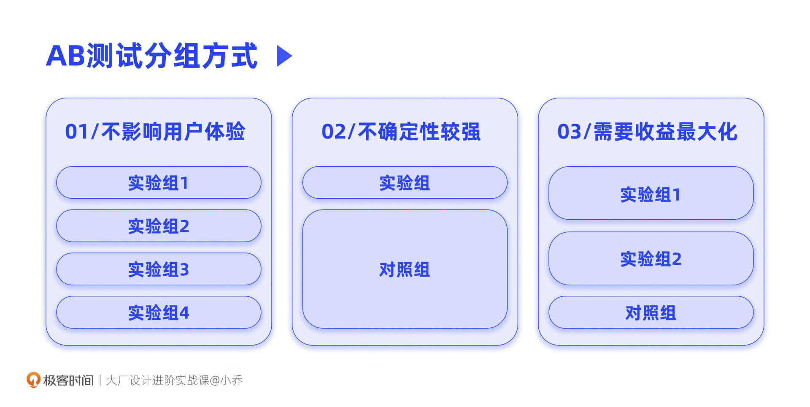
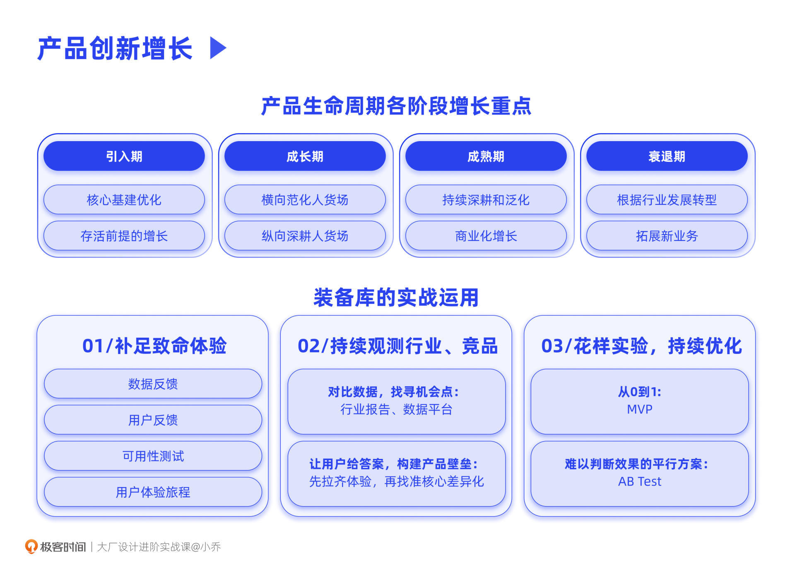

- 00 开篇词 升维思考，是设计师有效成长的第一步.md.html
- 01 业务周期：0-1-10-100-N的发展策略.md.html
- 02 商战模式：如何在商业竞争下突出重围？.md.html
- 03 市场洞察：如何找寻差异化撬动支点？.md.html
- 04 用户洞察：不懂用研的设计师不是好职场人.md.html
- 05 用户画像：是形式主义还是真的有效？.md.html
- 06 用户旅程：挖掘不同用户的核心机会点.md.html
- 07 职场晋升：看懂晋升的“游戏规则”.md.html
- 08 设计价值升级：五层进阶突破成长.md.html
- 09 基础价值 核心三原力：如何将需求转化为设计稿？.md.html
- 10 基础价值 第一性原理：从问题本质解决问题.md.html
- 11 基础价值 设计复盘：只是量化设计结果吗？.md.html
- 12 二级价值 负向网兜：如何全面发现负向问题？.md.html
- 13 二级价值 设计自驱：如何做好项目Owner？.md.html
- 14 二级价值 自驱合作：如何反内卷处理合作关系？.md.html
- 15 三级价值 增长误区：思维惯性陷阱和虚荣数据.md.html
- 16 三级价值 用户增长历程：AARRR是万能的吗？.md.html
- 17 三级价值 产品增长：如何做好产品创新？.md.html
- 18 三级价值 运营增长：如何自驱营销活动和投放？.md.html
- 19 三级价值 品牌增长 抢占心智，赢得人心红利.md.html
- 20 三级价值 增长实操：如何“步步为营”推动落地？.md.html
- 21 四级价值 L型赋能：让T型人才发挥更大价值.md.html
- 22 四级价值 “网状对比”解决共性痛点.md.html
- 23 五级价值 商业画布：设计师可以担任业务方吗？.md.html
- 24 五级价值 共创洞察：如何做好一次完善的workshop？.md.html
- 25 五级价值 领导力觉醒：写给新晋管理者.md.html
- 26 工作选择（上）：2B or 2C设计师？如何规划领域？.md.html
- 27 工作选择（下）：大厂 or 小厂？如何选择赛道？.md.html
- 28 人才地图：认知自我，成为高潜力人才.md.html
- 29 成长历程：如何从设计小白成长为团队负责人？.md.html
- 30 冰山模型：如何成为让面试官欣赏的“面霸”？.md.html
- 31 作品集指导：什么是面试官喜欢的作品集？.md.html
- 用户故事 什么是职场设计师进阶的正确姿势？.md.html
- 结束语 突破自我，成人达己.md.html
- 捐赠
17 三级价值 产品增长：如何做好产品创新？
你好，我是小乔。
在三级设计价值的前两节课中，我们规避了增长的误区，梳理了行业内3种增长模型的发展历程和应用方法。这些知识可以为我们后续实操增长项目提供扎实的前提条件，提升判断能力，并明确增长方向。
同时，我们将增长分为了产品创新、运营推广和品牌透传这三个角度。其中，产品创新需要真正从用户的需求出发，在竞争激烈的商业环境中找到差异化增长机会，这是用户愿意留存的前提，也是业务可以长期发展的核心所在。
这节课，我们就从产品创新开始，一起探讨在实战工作中，应该如何找寻机会点，并成功推动增长项目。
产品不同发展阶段的增长策略
也许有同学会有疑问，增长，是否已经不是从0到1，而是产品已经发展到第二个阶段“成长期”，才会考虑增长呢？其实不是的，每个阶段都有每个阶段需要增长的方向。
还记得我们在业务周期全景一课中，探讨过的业务发展阶段吗？我们作为设计师，就可以根据每个阶段适合推动的增长重点，发起需要设计投入的相关项目。我们来一起简单回顾下：
引入期：需要完善基建，优化核心体验，圈定种子用户完成冷启动，从而验证业务方向；
成长期：是业务快速增长的阶段，大部分决策都会围绕拉新展开，纵向深耕核心用户，横向扩充用户类型、发展新行业、拓展新品类、投入新市场等等；
成熟期：重点在于精细化运营，提升用户活跃度，实现商业化变现；
衰落期：朝行业上下游扩展新方向，挖掘老用户的新需求和新用户的新需求，从而创造第二增长曲线。
在业务的每个阶段，都有我们可以发挥增长作用的机会点和项目。只要是需要投入设计的项目，我们都可以主动提出和推动项目落地。
产品创新的实战方法
在了解了业务发展时每个阶段的增长重点后，我们在推动增长项目时，该如何分析增长机会点，带来事半功倍的效果呢？其实，所有的推导方法依然都出自我们的装备库，并且适用于每一个发展阶段，比如竞品分析、数据分析、用户访谈等。
接下来，我将与你一起探讨，我自己做产品增长时最常用的三大方法，你会发现，其实每个方法都充分运用了我们在第二章学习过的设计策略装备库。
- 补足致命体验
要理解这个方法，我们就要讲清楚两件事情：一个是“补足致命体验”和之前学习过的“优化负向体验”的差别是什么，另一个是我们该如何四两拨千斤地找出致命问题。
还记得我们学习过的4种洞察负向体验的方法吗，分别是通过数据反馈、用户反馈、可用性测试、用户体验旅程来发现问题，并根据优先级来优化问题。这套“负向网兜”的方法也同样适用于三级价值。
但优化负向体验是否能够带来显著的业务增长，取决于这个负向问题是否足够致命。我们往往会发现，当我们优化完许许多多的负向体验后，它们会共同发挥作用，给整体业务带来一定的增长，但未必能带来显著的增长。
那什么是“致命问题”呢？优先级排在第一位的问题就是致命问题吗？不一定，有可能找出的所有痛点都没有那么“痛”，即使不优化，用户也会因为刚需去使用。
因此，想要获得更显著的增长，我们可以看看这些优先级高的负向问题里有没有致命问题。致命体验往往有3种情况。
第1种，核心功能不可用。
比如，一个IM软件，无法发送消息；一个电商平台，无法成功下单。此时最重要的事情，是完善基建，将核心链路跑通。
第2种，刚需功能不完善。
比如，一个IM软件，没有发送语音消息的功能；一个电商平台，只能使用银行卡支付，却不能绑定微信或支付宝的支付功能。此时，将更多核心链路补足完善，可以大幅提升拉新、促活和留存情况。
再比如，一个租房产品，虽然可以租房，但因为无法感受到房源的真实样貌，用户难以选择；再比如，一个电商平台，虽然可以下单购物，但商品详情页看不出这个商品的样貌、优势、材质等信息，用户无法下单。
这就是为什么Airbnb会打通摄影师生态，由摄影师上门为房东们拍摄房源图片；许多租房App也会上线VR看房功能，帮助租客在线上挑选房源；许多电商平台在起初都是以图片展示商品，后续优化为以短视频来展示商品，并结合AR试穿、360度展示商品等方式，来提升商品表达力。
我们会发现，致命问题往往就藏在负向体验中。我们会发现，在经历了许多轮负向体验优化后，最新整理的负向体验也许都不致命，但这并不代表我们就不做这些负向体验优化了，高优的问题依然需要被尽快解决。在完成这些高优的负向体验优化的同时，我们可以再尝试其他方法，来寻找增长的机会点。
- 持续观测行业与竞品
为什么高优的负向体验需要尽快完成？因为市面上一旦有竞争对手出现，体验明显优于你，用户将很快被竞品吸引转移，这也是为什么在一个行业的竞争环境初期，“产品为王”。
因此，除了补足我们自身的致命体验，还需要持续观测行业和竞品，做到知己知彼。首先，核心体验需要与竞品拉齐，同时还要做到比竞品更优的差异化体验。那么，我们该如何找寻差异化的竞争机会呢？可以通过对比数据来发现切入点，也可以让用户给出答案 。
对比数据，洞察切入点
我们曾经在市场调研课程中讲过，我们想要时刻保持商业的敏感度，就需要频繁地吸收可靠的数据来源出具的行业报告；也需要通过百度指数、data.ai等数据平台，实时掌握竞品的数据情况，比如用户情况、DAU、下载量、覆盖市场、优化动作等等。
往往在与竞品的对比中，我们可以找到增长的切入点。比如，在与竞品对比存量用户的信息时，筛选年龄、地区、性别、兴趣分布等条件，可以找寻到与竞品的差距或者优势。
举个例子，下图是目前国内竞争激烈的两个产品的用户数据。为了不涉及到数据敏感性问题，我做了脱敏，我们称它们为产品A和产品B。假设我们现在在负责产品A，市场中有个强劲的对手是产品B，根据下图，你会有什么发现和猜想呢？

我们可以看到，在各年龄段中，我们被相关用户搜索和关注的程度都略低于竞品，但在“20-29”岁年龄段中，用户对我们的关注程度是远高出竞品的。
此时，我们就可以猜想，20-29岁的用户是否可以作为我们未来发力的核心用户人群呢？这部分用户对于我们的北极星指标来说，贡献度是大还是小呢？如果贡献是大的，那就可以重点运营这部分用户，针对这部分用户做产品创新，满足需求，从而带来差异化增长。
让用户给答案，构建产品壁垒
如果在现有数据中，我们没有像上述的例子一样发现核心差异，此时，我们就要让用户给出答案了。同时，也要结合我们自身有优势的资源和护城河，来判断创新方向的可行性。
举个例子，我的朋友在负责一款国际化产品，这个产品类似于Twitter，是一款资讯社区类产品（由于项目保密性，不便公开产品名称和截图）。目标市场对于Twitter的使用并不理想，虽然因为美国的文化辐射，当地有用户使用Twitter，但由于缺少目标国家的资讯内容，Twitter并不是一个强力的竞争对手。但除了Twitter以外，当地还有一款专门针对本地市场的资讯产品，且增长迅速。如果是你，会怎样寻找机会点，超越竞品呢？
最初，他们就是持续靠拢竞品，先拉齐竞品的功能与体验。拉齐并不只是表面的产品功能，而是由内到外，包含产品功能、运营推广、生态布局等全方位的拉齐。比如用户需要当地的资讯，就铺设了大量的内容运营常驻当地市场，引入PGC和自制资讯来源。
当拉齐基础体验后，配合相应的投放运营动作，数据已经产生了明显起色。但如果想要与竞品决一胜负，关键在于差异化优势。
在经历了大量用户调研后，他们总结了用户高频提到的核心需求。其中有一条是当地市场语言具有多样性，且彼此之间并不能相互互通，并不是上海话与湖南话的区别，而是类似于普通话与粤语的关系。并且，在不同语言下，文化也有所区别，因此推送的内容也需要根据语言和地区相应做出差异。
那在后续的优化中，他们上线了当地最核心的几种语言。并且在用户首次登录时，需要先选择语言，从而推荐更精准的内容，提升用户的留存。这个差异化功能上线后，业务得到了显著增长，并迅速超越了当地原本位居行业第一的竞品。
那你也许会有疑问，为什么竞品不抄一下这个功能呢？因为这个功能并没有那么容易实现，需要多种语言的语料库和大量的翻译工作。而这正是他所在公司的优势和资源长板，他们具备完善的文案设计师团队，语言相关人才也可以尽快招聘到位，形成了竞争壁垒。即使竞品逐渐补足了这个功能，他们也早已遥遥领先，难以超越了。

我们根据真实的案例，探讨了找寻差异化机会点并获得增长的成功案例。你会发现，所有机会点的底层逻辑，都是短暂的供需不平衡，如果刚好这是我们可以操作，甚至可以发挥优势的地方，那就可以大获全胜。
同时，相信你也已经明白“创新“的含义了——创新不是为了创新而创新，差异化也不是为了不同而不同，一定是以用户为中心，从真实的用户需求出发，探索痛点、爽点、痒点，而这些才真正构成了用户的“WOW moment”。
经过对比后找到的更优解都是在做创新，也许是与我们自己对比，也许是与竞品对比。创新可以是新功能、新市场、新品类、新用户类型、新生态、新管理方式等各个方面。创新是有理有据的，而不是以自身的经验凭空想象。
举个发生在我自己身上的反面案例。我曾经负责过一款国际化IM产品，有发送语音消息的功能。当时我们想和市面上的WhatsApp、Snapchat、Telegram等IM产品做出差异化，就将语音消息结合了发送贴纸的功能。在用户发送语音消息的同时，会弹出面板选择一个贴纸绑定发送，以加强语音消息的表达力。但在找真实用户做可用性测试的时候，我们惊讶地发现，这个任务的成功率竟然为0。

我们访谈后得知，当地用户偏爱发1分钟以上的长语音，在发送语音消息时，并没有需求去加一个贴纸。就算需要贴纸来加强语气，也会在发送完语音之后，再单独发一个。在发送消息时弹出的贴纸功能，不但没有起到正向作用，还不利于用户使用更重要的长语音挂锁和取消发送功能。
通过以上两个正反案例，我们一起讨论了观测行业和竞品来找寻增长机会点的方法。那就是，在与竞品拉齐核心体验后，根据用户真正的需求和自己擅长的竞争力，带来差异化增长，甚至成为目标市场的行业第一。
- 花样实验，持续优化
当通过上述的方法找到机会点后，我们在推动项目之前会产生许多假设。比如满足了多语言需求，真的可以带来增长吗？比如我们核心发力在20-29岁的用户上，真的可以带来增长吗？这个时候，我们就可以通过MVP版本和AB测试这两个方法来轻量验证。
MVP
如果我们从0到1研发一款新产品或新功能，MVP是最佳选择。MVP就是Minimum Viable Product的缩写，意思就是最小化的可使用的产品。这个MVP甚至不需要是一个App，它可以是一个视频，一个PPT介绍，但可以帮助我们验证市场需求和产品价值。
关于MVP，最著名的案例是Dropbox。创始人Drew Houston做了一个视频放在了YouTube 上，介绍Dropbox的各项功能。结果排队登记使用Beta版的用户一夜之间从5000暴增到75000，可当时Dropbox甚至连实际的产品都还没有。
再以我自己的项目为例，我曾经负责AR项目时，已经验证了AR试穿对于鞋类成交转化的作用，想要扩充其他品类来探索AR的价值。但每一个商品在产出AR模型素材时，都需要成本投入。因此在批量生产素材之前，我需要验证这个品类使用AR试穿的价值作用。
以帽子为例，我在爆款、普销款、冷门款中分别挑选了少量商品，给这些商品制作了3D模型，与SDK供应商联调了AR试穿功能，进行上线测试。最终不仅验证了AR对该品类的作用，还发现了AR对不同热度商品的价值表现不同，从而指导我优化选品逻辑。
MVP的本质是一场小成本的用户和市场的真实使用反馈调研，我们需要根据调研结论不断地迭代优化。如果市场反馈不好，也来得及彻底改变方向。需要注意的是，如果一个产品还未进入市场，在使用MVP版本测试时，尽量使用马甲代号，而不要暴露产品名称。因为一旦被认为“不好用”，将很难改变用户认知。
AB Test
当我们对一个功能有不同方案，但又无法判断时，AB测试是最佳选择。根据产品功能和测试目的的区别，用户分组方式会有一定差异。
第1种：不具备很大风险性，但需要在多个方案中抉择。
比如我们设计一个大促主会场的入口，但不确定文案、颜色、插画风格等哪种效果最好，就可以通过AB测试来验证。虽然叫做AB测试，但分组数并非只有AB两种，而是根据我们需要测试的方案数量决定。如果我们穷举出6种方案，那就将全量用户平均分为6组用户。
需要注意的是，用户的年龄、地域、性别等影响行为的要素，在每一个分组中需要保持一致。比如A组中，20-29岁的用户占比为20%，30-39岁的用户占比为40%，那其它组也应该是这样的构成。
以Airbnb的设计为例，用户在看到喜欢的民宿房源时，可以收藏起来，等旅游的时候预订入住。那么这个收藏图标，应该怎样设计呢？是用爱心，还是用五角星呢？经过AB测试，图标用爱心的收藏率，比五角星提升了30%。
第2种：不确定性较大的功能，有造成负向的风险。
比如我们做了首页改版。此时，就不能以全量用户进行测试了，因为新版本可能没有老版本效果好。此时我们可以灰度分出少量用户，其他用户作为对照组。同样，灰度实验组的用户构成比例，需要与对照组的用户构成比例保持一致。
灰度实验组的人数为“最小可靠性样本”。测试往往是人数越多越精准，但如果方案不佳会带来业务风险，可以通过这个网站来计算合适的人数：Evan’s Awesome A/B Tools。
第3种：希望收益最大化的功能或活动。
比如，运营活动需要开设几个分组实验，因为活动规则和玩法不同，带来的效果差异很大。比如我们要做个拉好友助力领金币的活动，方案1是每次领的金币数量不确定，随机显示，方案2是每次领的金币数量固定，哪个方案对于拉新表现和ROI是最有利的呢？
每个国家、每个地区、每种运营活动的结论往往都不一致，没有经验可以直接拿来复用，只能自己上线测试。此时我们需要分出少量用户作为对照组，而剩下的用户平分为两组，进行两个方案的上线测试。

AB测试的时长根据项目的具体情况而定，核心在于数据结果足以判断测试内容。短则一周，长则一年，但至少需要完整覆盖一个用户行为周期。比如用户在周末的行为表现和工作日不同，那至少需要覆盖一个周末。
AB测试，是大部分企业判断功能价值的最高效和可信的方式。以字节跳动2021年的数据为例，每天同时进行的AB测试达到上万场，单日新增实验数量超过1500个，覆盖400多个大大小小的业务。
今日小结
今天，我们一起探讨了如何在产品创新的角度推动业务增长。

在产品发展的不同阶段，都有增长机会点。孵化期，需要完善基础建设、确保核心功能的可用性，同时也根据自身产品的特性，决定是否需要优先进行用户增长；成长期，增长往往成为了最为核心的事情，此时需要纵向运营垂类“人货场”，横向拓展核心用户类型、行业、品类、市场等等；成熟期，除了持续进行成长期的战略性增长以外，也需要满足商业化增长目标；衰落期，业务想要扭转局势，就需要建立新的核心壁垒，拓展业务类型和生态。
在找寻机会点时，运用的都是我们在第二章节学习过的内容，这就像是我们的装备库。在实战运用中，我们首先可以运用“负向网兜”的4种方法找寻致命问题，也通过持续查阅行业报告、持续观测竞品动向和对比分析，找寻差异化机会点。在找到机会点后，我们会合理推导出许多解决方案，作出假设，此时可以通过MVP和AB测试的方式，找出最优解。
综上，产品创新的核心路径就是：分析差异化机会、假设解决方案、低成本求证方案、正式落地验证效果。我们这节课所学的三个方法，就可以帮助我们找到产品创新的机会点，再将提出的解决方案进行低成本快速验证，以此形成核心竞争力，带动显著增长，甚至成为目标市场的行业第一。
在之后的课程中，我们将一起学习如何通过运营推广和品牌透传的方法，实现增长的加成效应。
互动时刻
回顾你过往的工作，是否曾经只是一味地借鉴竞品，却没有做差异化创新去超越竞品？根据你过往的经验，还有哪些方法可以帮助你找到产品创新的增长机会点呢？
欢迎把你的经历和思考在留言区分享出来，与我和其他同学一起探讨。我们建立了一个读者交流群，欢迎你的加入！如果你觉得有所收获，也欢迎把文章分享给你的朋友一起学习。我们下节课见。
© 2019 - 2023 Liangliang Lee. Powered by gin and hexo-theme-book.